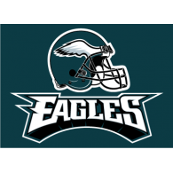

Philadelphia Eagles
I have been a Philadelphia Eagles fan since 1988. My favorite Eagles player of all time is Randall Cunningham.
Quarterback Randall Cunningham #12 was one of the first running quarterbacks in the NFL. Cunningham changed the face of the quarterback position as we knew it. He was a groundbreaker and role models to many of today's athletic quarterbacks. A player that was ahead of his time, Cunningham's career highlights are unbelievable and incredible to see, even 30 years later. Along with a shutdown defense, led by Pro-Bowler Reggie White, Cunningham made the 1988-89 Eagles one of the most exciting teams in the NFL.
The Philadelphia Eagles beat the New England Patriots in the 2018 Super Bowl to win their first Super Bowl in team history 41-33. The winning play of the Super Bowl has been dubbed the 'Philly Special', and will live on in Eagles lore for years to come. FlyEaglesFly.
Eagles Quarterbacks
- Randall Cunningham
- Donovan McNabb
- Michael Vick